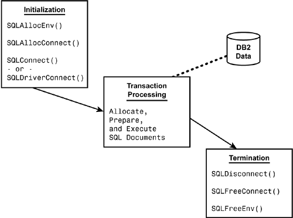

|
|
< Day Day Up > |
|
Using ODBC (Call Level Interface)ODBC is another alternative development option. ODBC provides a Call Level Interface, or CLI, for accessing DB2 data. ODBC provides an alternative to embedded dynamic SQL. It is an application programming interface (API) that uses function calls to pass dynamic SQL statements as function arguments. IBM's ODBC support in DB2 is based on the Microsoft Open Database Connectivity (ODBC) specification and the X/Open Call Level Interface specification. NOTE X/Open is an independent, worldwide open systems organization whose goal is to increase the portability of applications by combining existing and emerging standards. Microsoft's ODBC is based on the X/Open CLI specification and is the most popular CLI for relational database access. ODBC for DB2 is designed to be used by C and C++ programs. ODBC can be used to make API calls to DB2 instead of using embedded SQL. NOTE DB2 Version 5 introduced the DB2 Call Level Interface (CLI). In Version 6, the DB2 CLI was renamed to DB2 ODBC (Open Database Connectivity). The rename was cosmetic only; the functionality of the interface was not impacted, so your CLI applications will continue to function using ODBC. Over time IBM continues to augment and improve the capabilities and functionality of ODBC for DB2. ODBC applications differ from traditional DB2 programs using embedded, static SQL. When ODBC is used, a specific set of function calls is used at runtime to execute SQL statements and access database services. No precompilation is required. Contrast this system with a traditional, embedded SQL program that requires a precompiler to convert the SQL statements into executable code. The program is compiled, the SQL executables are bound to the data source, and only then can the program be executed. Any statement that can be executed using dynamic SQL can be executed using DB2 ODBC. Because DB2 ODBC is based on open specifications, DB2 applications using ODBC are more portable than embedded SQL applications. Further, because a precompiler is not required, the code is not bound to the data source (in this case, DB2). This capability gives the application a degree of independence, allowing the code to connect directly to the appropriate data source at runtime without changing or preparing (precompiling/compiling/binding) the program. A DB2 ODBC application consists of three main tasks as shown in Figure 14.3. The initialization task allocates and initializes resources in preparation for the transaction processing task. The bulk of the program is performed during the transaction processing task. It is here where SQL statements are passed to ODBC to access and modify DB2 data. The final step is the termination phase where allocated resources are freed. Figure 14.3. An ODBC application.Listing 14.1 shows a brief code example using ODBC to access DB2 data. Note the use of functions such as SQLAllocStmt() and SQLExecDirect() to issue SQL instead of explicitly embedded SQL statements. Listing 14.1. Sample DB2 ODBC Code
int
process_stmt(SQLHENV henv,
SQLHDBC hdbc,
SQLCHAR * sqlstr)
{
SQLHSTMT hsql;
SQLRETURN rc;
/* allocate a statement handle */
SQLAllocStmt(hdbc, &hsql);
/* execute the SQL statement in "sqlstr" */
rc = SQLExecDirect(hsql, sqlstr, SQL_NTS);
if (rc != SQL_SUCCESS)
if (rc == SQL_NO_DATA_FOUND)
{
printf("\nThe SQL statement finished without an\n");
printf("error but no data was found or modified\n");
return (SQL_SUCCESS);
} else
/* perform error checking routine */
DB2 ODBC GuidelinesWhen building application programs using DB2 ODBC, keep the following tips and techniques in mind. Be Aware of DB2 ODBC DifferencesDB2's support of ODBC is not 100% functionally equivalent to standard ODBC. The CLI contains all ODBC level 1 functionality, most of ODBC 2.0, most ODBC 3.0 functionality, as well as IBM extensions for DB2-specific features.
Be Aware of DB2 ODBC RestrictionsWhen using ODBC to access DB2 data, be aware that some traditional DB2 features cannot be used by ODBC applications. For example, the following are not supported by ODBC:
Use ODBC to Reduce the Application Administration BurdenUsing DB2 ODBC can reduce the amount of application management and administration. Each DB2 ODBC program does not need to be bound to each data source. Bind files provided with DB2 ODBC need to be bound only once for all ODBC applications. However, use of ODBC with DB2 requires dynamic SQL and C or C++ programming skills. Ensure that this trade-off is effective before switching to ODBC programming for administrative reasons. Understand That DRDA and ODBC Are Complementary TechniquesDevelopers sometimes confuse ODBC with DRDA. DRDA is a remote connectivity architecture; ODBC is an API for data manipulation in relational databases. You should view DRDA and ODBC as complementary to one another—not competitive. Consider Using Both Embedded SQL and ODBCAn application can use both embedded SQL and ODBC to its advantage. You can create a stored procedure using embedded, static SQL. The stored procedure can then be called from within a DB2 ODBC application. After the stored procedure is created, any DB2 ODBC application can call it. You also can write a mixed program that uses both DB2 ODBC and embedded SQL. For example, you could write the bulk of the application using ODBC calls, but you could write critical components using embedded static SQL for performance or security reasons. Deploy your applications using this scenario only if static SQL stored procedures do not meet your application's needs. For more information on stored procedures, consult Chapter 15, "Using DB2 Stored Procedures." Do Not Code Cursors with ODBCWhen you're using ODBC with DB2, explicit cursor declaration is not required. ODBC automatically creates cursors as needed, and the application can use the generated cursor in using fetches for multiple row SELECT statements as well as positioned UPDATE and DELETE statements. Likewise, the OPEN statement is not required when you're using ODBC. When SELECT is executed, ODBC automatically opens the cursor. Increase Portability Using ASCII-Encoded TablesWhen an application has a high probability of being ported to another environment, use ODBC and ASCII-encoded tables to improve open data access. As support for Unicode becomes more pervasive, you might choose to specify Unicode table encoding instead of ASCII. Use Parameter Markers with ODBCUnlike embedded SQL, ODBC allows the use of parameter markers when issuing the SQLExecDirect() function. The SQLExecDirect() function is the ODBC equivalent of the EXECUTE IMMEDIATE statement. Code COMMIT and ROLLBACK Using SQLTransact()A COMMIT or ROLLBACK in ODBC is issued via the SQLTransact() function call rather than by passing it as an SQL statement. Check the Basic ODBC Function Return CodeEach ODBC function returns one of the following basic return codes:
These return codes provide only rudimentary success or failure information. For detailed information, use the SQLError() function. Use SQLError() to Check SQLSTATEYou can use the SQLError() function to obtain additional details that are not supplied by the basic ODBC function return codes. Use SQLError() to check the success or failure of each call using the CLI when error diagnostic checking must be performed by the program. The SQLError() function returns the following information:
The format and specification of most of the SQLSTATE values specified by ODBC are consistent with the values used by DB2 for OS/390, but some differences do exist. Refer to Table A.3 in Appendix A, "DB2 Sample Tables," for a listing of the DB2 ODBC-specific SQLSTATE values. |
|
|
< Day Day Up > |
|